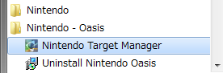
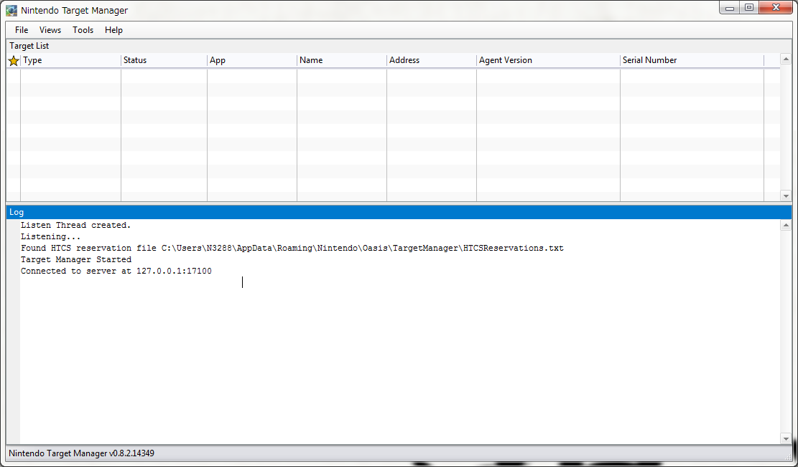
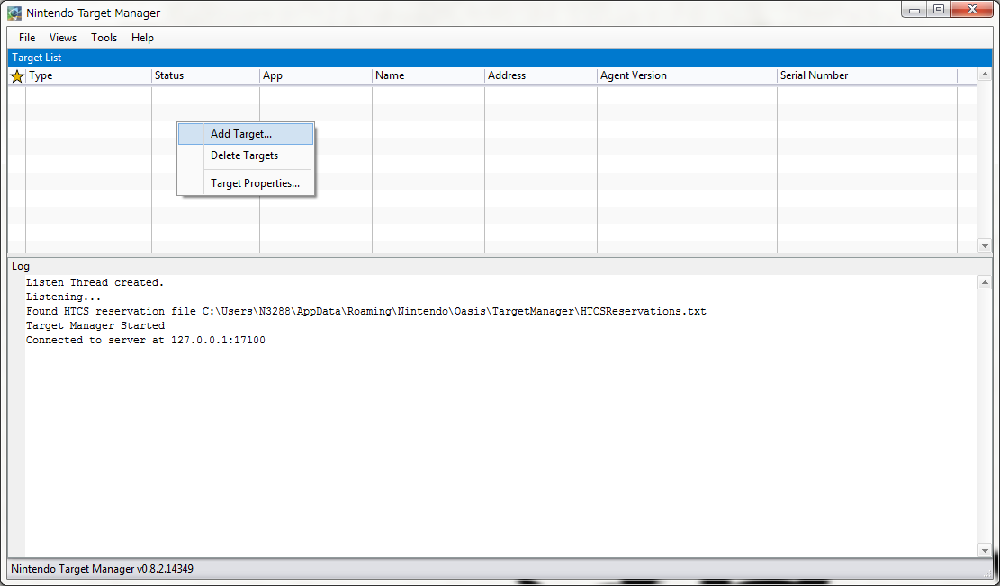
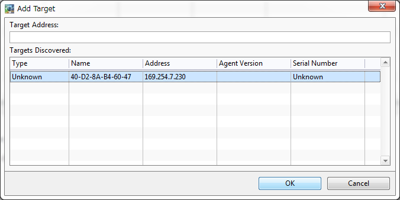
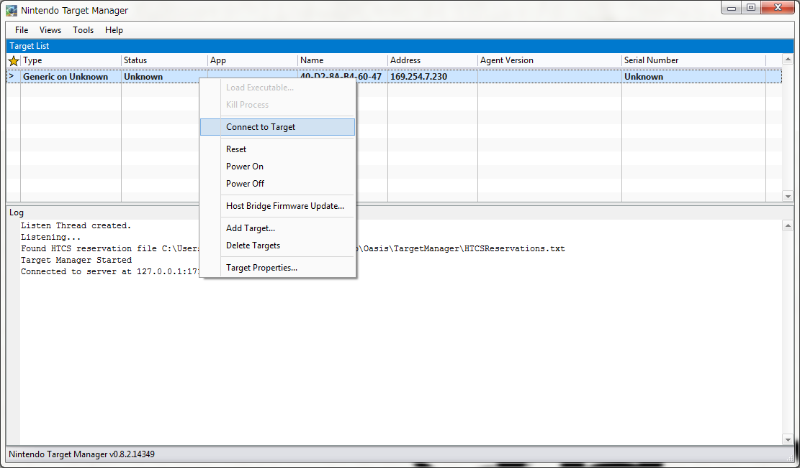
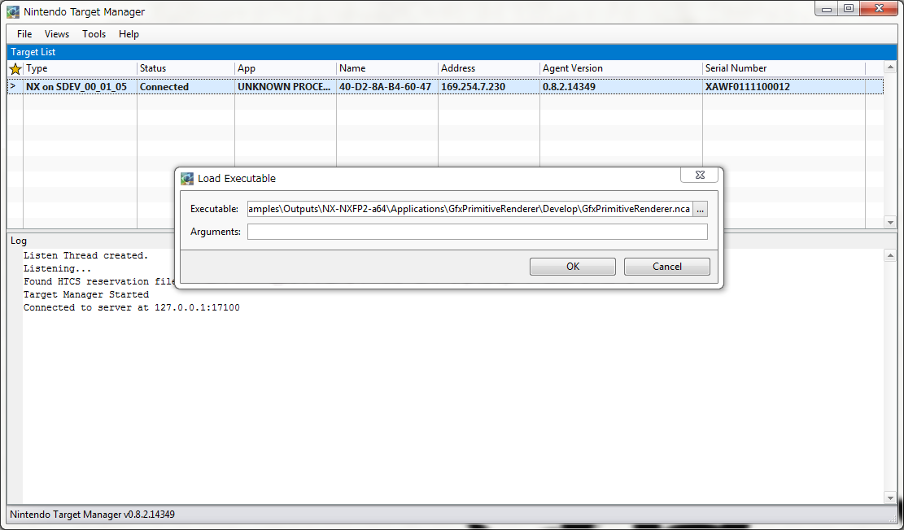

Running NX Applications
This page describes the process for executing NX applications for non-developers who do not have Visual Studio.
As an example, we are using the GfxPrimitiveRenderer sample. Get the NCA file for the GfxPrimitiveRenderer sample from a developer. An NCA file is an NX application executable file.
For more information about creating NCA files, see the Application Development section in the Tutorial chapter in the NintendoSDK documentation.
You can also install NX applications on the SDEV console, and run NX applications on the SDEV alone.
For more information about the process, in the SDEV Operations Manual, see Installing NX Applications > Running NX Applications on the SDEV.
| Procedure | Operation |
|---|---|
| 1 |
From the Start menu, start Nintendo Target Manager.   |
| 2 |
Right-click the target pane, and from the shortcut menu, select Add Target.  |
| 3 |
Select the SDEV you want to connect to in this dialog box, then click OK.  The default name of the development hardware is the MAC address or the serial number of the unit. Info
For information about checking the serial number, see Initializing the SDEV. |
| 4 |
The selected SDEV appears in the target pane. Right-click the target and select Connect to Target.  The connection is successful when the status changes from Not connected to Connected. |
| 5 |
Confirm that the target is connected. Right-click the target and select Load executable file. The Load executable file dialog box appears. Select an NX application executable file (NCA file) and click OK. For example, running the GfxPrimitiveRenderer sample will look like the following.  |
| 6 |
After executing the sample, the following image will be displayed on the SDEV LCD screen.
|

Note: Target Manager
Target Manager is software that manages the SDEV unit connected to a PC.
You can use it to register development hardware to a PC and run built-in NX applications on SDEV units.
In the future, it will be possible to manage multiple SDEV units from one Target Manager.
Target Manager will be able to manage devices in the emulation environment on Windows just like it can for development hardware.
Target Manager starts automatically when running applications from Visual Studio on the SDEV/EDEV.
If you are operating the SDEV/EDEV without using Visual Studio, from the Start Menu, start Target Manager.
For more information about the features of the Target Manager, see the Target Manager section of Features > Development Hardware Control.
CONFIDENTIAL